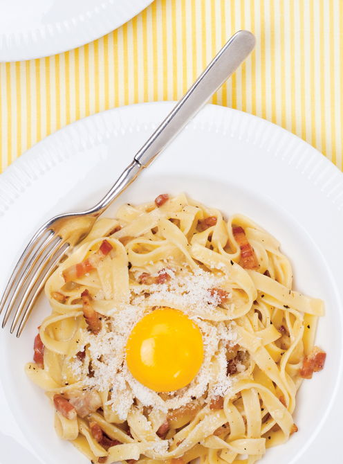

Recette des Pâtes à la Carbonara

Ingrédients :
- 400 g de spaghetti
- 150 g de pancetta (ou lardons)
- 3 jaunes d’œufs
- 1 œuf entier
- 60 g de parmesan râpé
- Poivre noir fraîchement moulu
- Sel
Préparation :
- Faites cuire les pâtes dans une grande casserole d’eau salée bouillante selon les indications du paquet.
- Pendant ce temps, faites revenir la pancetta dans une poêle sans matière grasse jusqu’à ce qu’elle soit dorée et croustillante.
- Dans un bol, mélangez les jaunes d’œufs, l’œuf entier, le parmesan râpé et beaucoup de poivre noir. Ne salez pas la sauce.
- Égouttez les pâtes en réservant un peu d’eau de cuisson.
- Ajoutez les pâtes bien chaudes dans le bol contenant la sauce et mélangez énergiquement. Ajoutez un peu d’eau de cuisson pour rendre la sauce plus onctueuse si nécessaire.
- Ajoutez la pancetta, mélangez encore une fois, et servez immédiatement avec un peu de parmesan supplémentaire.
Retour à l'accueil